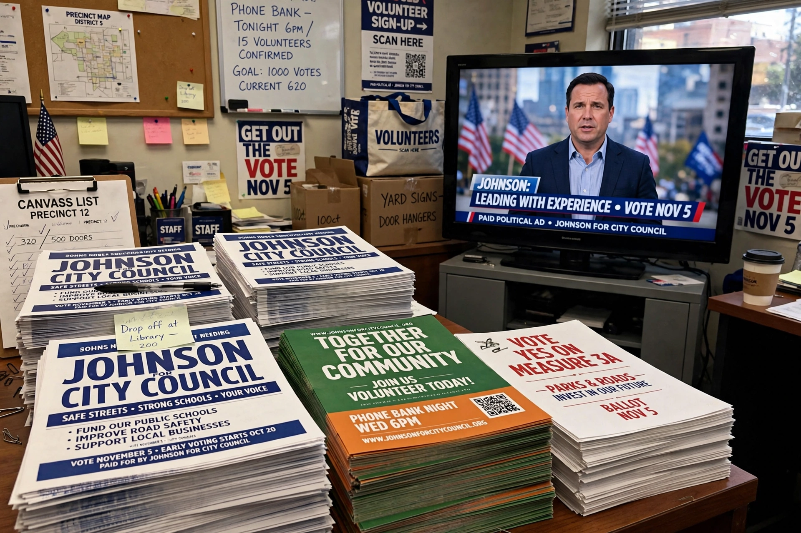

A 527 organization or 527 group is a type of American tax-exempt organisation named after section 527 of the U.S. Internal Revenue Code. Technically, almost all political committees, including state, local and federal candidate committees, traditional political action committees (PACs), and political parties, are 527s. However, in common practice the term is usually reserved for organisations that register with the Internal Revenue Service rather than the Federal Election Commission, and raise and spend so-called "soft money" to influence elections without expressly advocating the election or defeat of a candidate.

527 groups rose to prominence after the Bipartisan Campaign Reform Act of 2002 banned soft money to national parties; donors redirected large contributions to outside groups such as America Coming Together and Swift Boat Veterans for Truth in the 2004 election. Congress considered restricting them further, and the FEC imposed fines on several groups after the 2004 cycle for functioning as unregistered political committees.
527s must disclose their donors to the IRS and file periodic reports, but may accept unlimited contributions from individuals, corporations and unions. They cannot coordinate directly with candidates or expressly advocate their election, instead running issue advertisements and get-out-the-vote drives. After Citizens United (2010), many political operatives shifted activity to Super PACs and 501(c)(4) groups, and the prominence of pure 527s declined.
See also: Political action committee · Political funding · Dark money